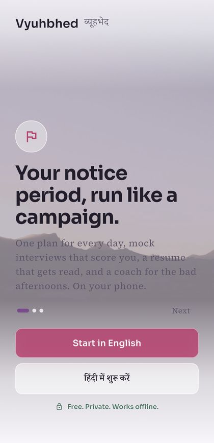
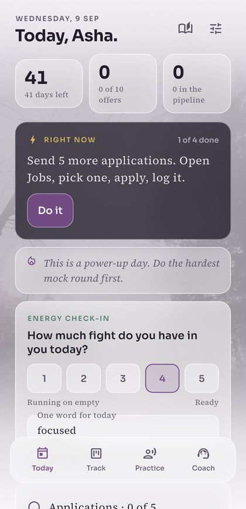
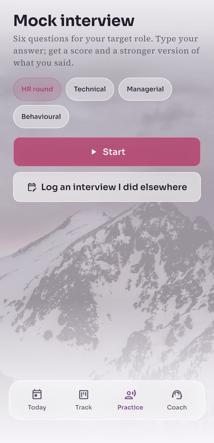

आपका नोटिस पीरियड — एक अभियान की तरह।
One plan every morning, mock interviews that score you, a resume that gets read, and a coach for the bad afternoons.
Free. No account. Works offline. English and Hindi.



The app tells you which one is next, so the hard part is never deciding what to do. That is the whole method.
Thirty seconds on your energy. A low day gets a different plan, not a guilt trip.
Hit the count you set. That counter is the only score that matters this month.
HR, technical or managerial. Scored on structure and specificity, with a stronger version of your answer.
For the role you are actually targeting. Tick it and close the app.
Nine screens, no account on any of them. Only two things need the internet: opening a job board, and downloading the coach the one time.
Opens on a single instruction — check in, apply, do a mock, learn something, or rest — with the days left in your notice period counting down beside it.
Questions written for the role you named, then a mark out of five on structure and five on specificity — plus a stronger version of the answer you just gave.
Paste your resume, and the job description if you have it. You get back a blunt verdict, a list of fixes, your bullets rewritten, and the keywords the posting wants that your resume never says.
Move each one along as it happens. This is also what feeds the daily plan — the app counts what you logged, not what you meant to do.
Your role and city go into every search box for you. These are ordinary links — nothing is scraped and no server sits in the middle.
Four rejections in a week is normal and it still hurts. Ask it anything about the search — it knows your target role, your notice date and where you are.
Notes you keep as you go. Three months in, this is the only honest record of what actually worked.
Target role, years, city, skills, the day your notice ends, how many offers you want and how many applications a day that takes. Everything else is built from this.
Run the coach on the phone, or paste your own Gemini key for sharper answers. The Coach screen carries a badge telling you which one just answered, rather than pretending they are the same.
Offline by default. The coach is a model you download once and run on the device. No account, no server, nobody reading along. Delete the app and it is all gone.
Online only if you say so. Paste your own Gemini key in Settings for sharper answers — then, and only then, your text leaves the phone. The app tells you which engine is answering instead of pretending.
Your applications stay yours. The tracker, the journal, your profile and every mock you have ever done sit in one file on your phone. There is nowhere else to look for them.
Open source. The privacy claim above is checkable — read the code.